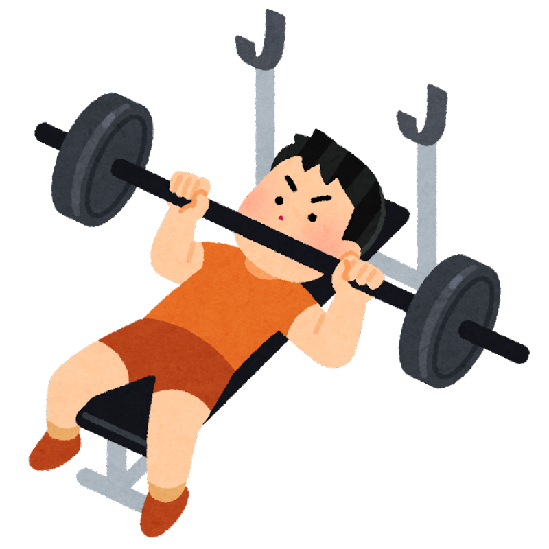
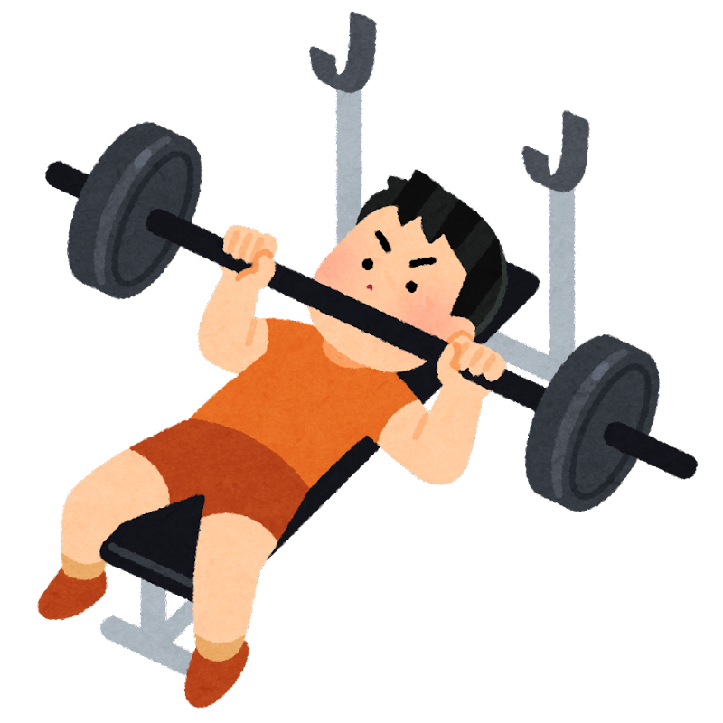
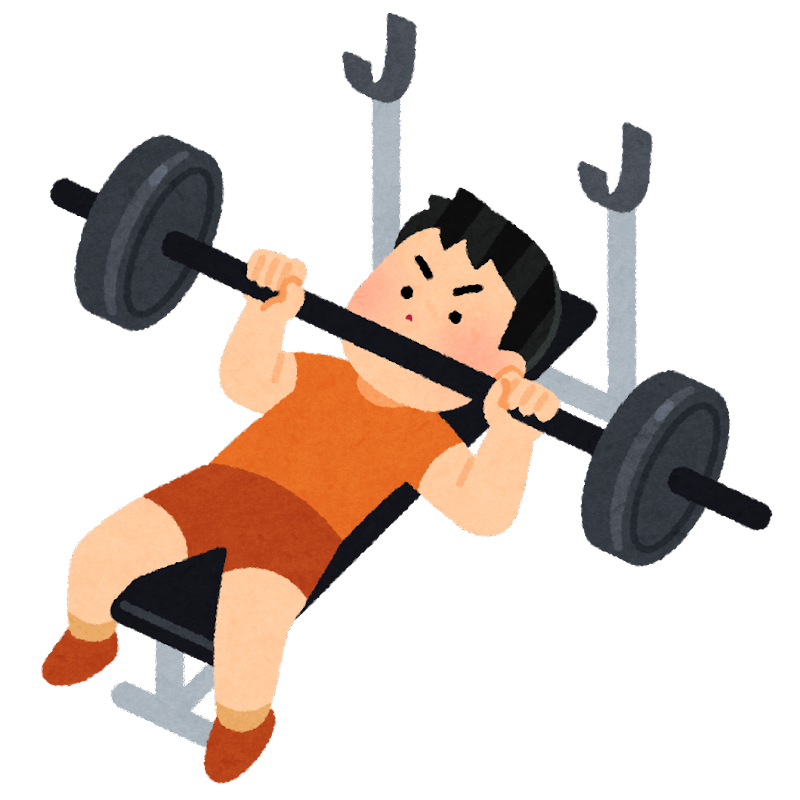
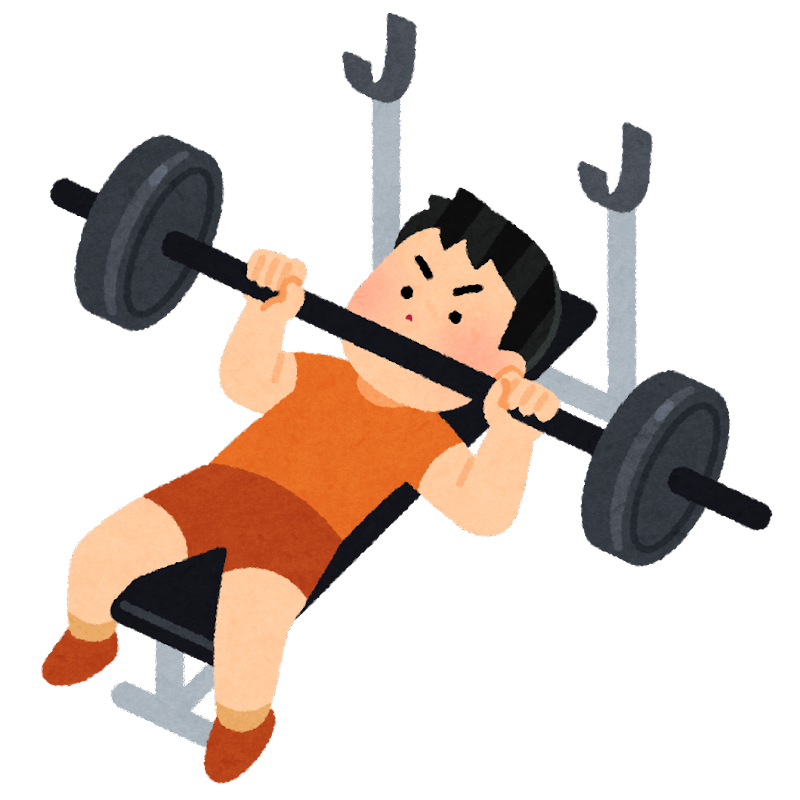
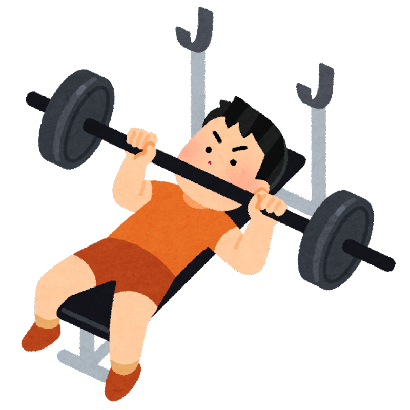

Tasuku Nakasone
琉球大学と名桜大学で
手話会の講師
を担っております。
仕事は学童の職員をしておりますが、
今年中に
IT関連の仕事
への転職を検討しているところです。
〜目次〜
「日本語対応手話」と「日本手話」の違い
日本手話のさまざまな文法
手話資料
プログラミング参考書
「日本語対応手話」と「日本手話」の違い
日本手話のさまざまな文法
手指動作（手型、動き、位置）
非手指動作 NMM(non-manual marker)
CL (Classifier／分類辞)
ロールシフト
PT (Pointing／指さし)
音韻変換(参考)
手話資料
去年
今年
彼女の有無
彼女いない
彼女いる
方法
ナンパ
マッチングアプリ(Omiai)
挨拶
感情
数
人物
学校
疑問詞
よく使う手話
接続詞

 


